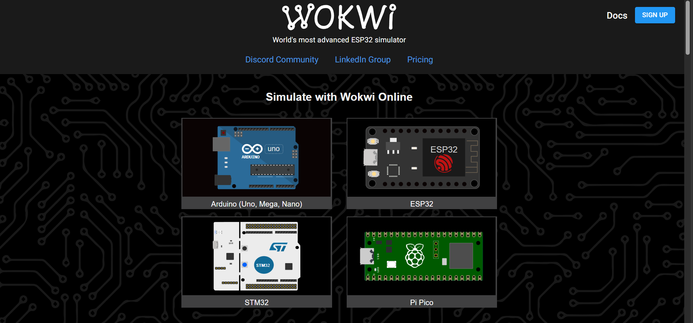
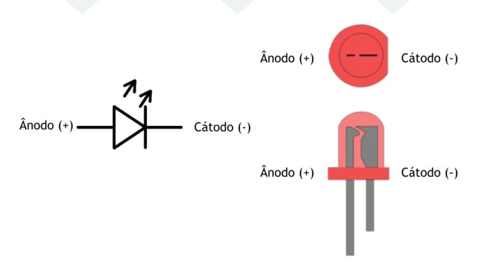
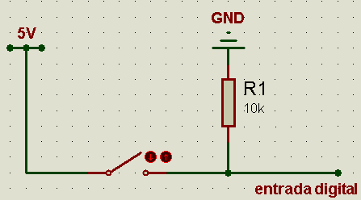
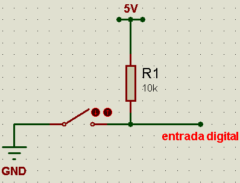

Diz basicamente respeito a controlar objetos eletrônicos por meio de softwares, especialmente arduíno.

Aprendi sobre o arduíno, microcontroladores, sistemas embarcados, tipos de LED, tipos de resistor, sobre a linguagem por trás do arduíno (Wiring), que é baseada em C/C++, conheci o Tinkercad, Wokwi e Arduino IDE.

Aprendi que o LED tem o negativo como catodo e o positivo como anodo (perna torta) e que numa pilha a nomenclatura é o contrário.
Resistor "pull down"

Se quisermos que o circuito receba 0 quando não houver qualquer sinal na porta de entrada, usamos um resistor pull down, isto é, conectado ao ground.
Circuito aberto: Toda e qualquer tensão mínima que surja da natureza no pino é rapidamente aterrada, retornando o valor 0. Sem o resistor, isso não acontece e o valor fica flutuando.
Circuito fechado: A entrada do microprocessador (o circuito estando fechado ou aberto) sempre funciona como um voltímetro (diferente de uma lâmpada ou motor). Isto é, possui uma impedância tão alta (milhões de ohms) que está alí apenas para saber se há ou não tensão no circuito. Como o resistor está em paralelo (apesar de não parecer), a tensão nele e no pino é a mesma e um pouquinho de corrente passa por ele e vai para o terra.
Chave aberta: Microprocessador lê "low".
Chave fechada: Microprocessador lê "high".
Resistor "pull up"

Se quisermos que o circuito receba 1 quando não houver qualquer sinal na porta de entrada, usamos um resistor pull up, isto é, conectado ao VCC.
Circuito aberto: Toda e qualquer tensão mínima que surja da natureza no pino é rapidamente aterrada, retornando o valor 1. Sem o resistor, isso não acontece e o valor fica flutuando.
Circuito fechado: Com o resistor pull up, a tensão no pino é 0 quando o circuito está fechado, isto é, o microprocessador lê "low".